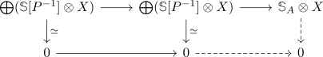

acyclicity of an abelian group and bousfield class
Proposition
Let $A,B$ be abelian groups. TFAE:
- $A \sim B$ have the same acyclicity
- $\langle \mathbb{S}_{A}\rangle = \langle \mathbb{S}_{B}\rangle$ have the same bousfield class of a spectrum
- $\langle A\rangle = \langle B\rangle$ have the same bousfield class
Proof
using acyclicity of an abelian group and set of primes it suffices to treat the cases
- $B = \mathbb{Z}[P^{-1}]$ if $A$ is torsion free, where $P$ consists of the primes acting invertibly
- $B = \biogplus_{p \in \mathbb{P}} \mathbb{F}_p$ if $A$ contains torsion, where $P$ consists of all primes, which don't act invertibly
1) $\implies$ 2)
1) $B = \mathbb{Z}[P^{-1}]$
we may choose a presentation $\bigoplus \mathbb{Z} \rightarrow \bigoplus \mathbb{Z} \rightarrow A$ and tensor it with the flat module $\mathbb{Z}[P^{-1}]$ to get a presentation $\bigoplus \mathbb{Z}[P^{-1}] \rightarrow \bigoplus \mathbb{Z}[P^{-1}] \rightarrow A$. This gives a presentation of moore spectra $\bigoplus \mathbb{S}[P^{-1}] \rightarrow \bigoplus \mathbb{S}[P^{-1}] \rightarrow \mathbb{S}_{A}$ (cf. localization of a moore spectrum is a moore spectrum).
Now let $X$ be an arbitrary spectrum: Suppose $X$ is $\mathbb{S}_{\mathbb{Z}[P^{-1}]}$ acyclic, then the sequence

is still a cofiber sequence.
Suppose $X$ is $\mathbb{S}_{A}$ acyclic, then it suffices to show that every element in $\pi_*(X)$ is $P$ torsion (cf. S_(p) acyclic spectrum) . Let us consider $\pi_0(-)$, the other cases follow from shifting $X$ (everything is exact etc).
Assume that we have an element $g \in \pi_0(X)$, which is not P torsion. Then there exists a map $\mathbb{Z} \rightarrow G$ M-flat module and sum
2) $B = \bigoplus \mathbb{F}_p$
using bousfield class of a sum is the intersection
$\bigoplus \mathbb{F}_p$ acyclic
Suppose $X$ is $\bigoplus \mathbb{F}_p$ acyclic
$A$ acyclic
Suppose $X$ is $A$ acyclic, then we need to show that $X$ is $\mathbb{S}/p$ acyclic for every $p$. In other words, it suffices to show that every element in $\pi_*(X)$ is uniquely $p$ divisible (cf. S/p acyclic spectrum is S_(p) local). This follows as we have a fiber
2) $\implies$ 3)
we have the following equivalent conditions a) $X \otimes_{\mathbb{S}} A = 0$ b) $X \otimes_{\mathbb{S}} (\mathbb{Z} \otimes_{\mathbb{S}} \mathbb{S}_A) = 0$ c) $(X \otimes_{\mathbb{S}} \mathbb{Z}) \otimes_{\mathbb{S}} \mathbb{S}_A = 0$ d) $(X \otimes_{\mathbb{S}} \mathbb{Z}) \otimes_{\mathbb{S}} \mathbb{S}_B = 0$ by assumption e) $(X \otimes_{\mathbb{S}} B = 0$
This implies $\langle A\rangle = \langle B\rangle$
3) $\implies$ 1)
1)
Suppose $\langle A \rangle = \langle \mathbb{Z}[P^{-1}]\rangle$, then we need to show that
- $p$ acts invertibly for all $p \in P$
- $q$ does not act invertibly for $q \not\in P$.
Here $p$ acts invertibly on $A$ ($\mathbb{Z}[P^{-1}]$ if and only if $\mathbb{S}/p \otimes_{\mathbb{S}} A$ ($ \mathbb{S}/p \otimes_{\mathbb{S}} \mathbb{Z}[P^{-1}])$ vanishes (cf. multiplication is an equivalence and mod p is trivial in a stable category, mod n in spectra is tensor product with sphere).
2)
So it remains to show that if $\langle A\rangle = \langle \bigoplus \mathbb{F}_p\rangle$, then $A$ contains torsion: This follows as $\mathbb{Z}[p^{-1}] \otimes -$ detects whether an element in the homotopy groups - so in particular $\pi_0(A) = A$ - has $p$ primary torison.